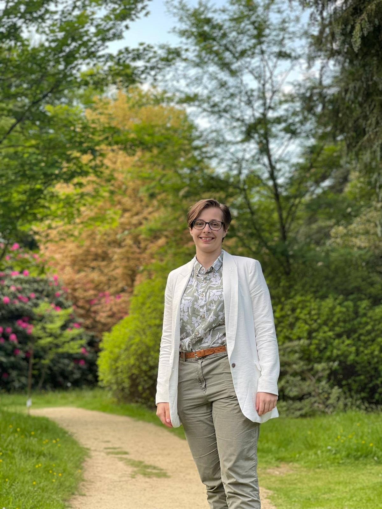

Alexandria Perkin

About Me
Hi, I'm a recent graduate who studied Electronic and Information Engineering at Imperial College London.
I'm particularly interested in Robotics and Computer Vision. Outside of work I enjoy board gaming, 3D printing and skiing.
Education
2019 - 2026
Electronic and Information Engineering BEng
First Class Honours
Imperial College London
Year 3
- Embedded Systems
- Operations Research
- Introduction to Machine Learning
- Mathematics for Signals and Systems
- Robotics
- Robotic Manipulation
- Computer Vision
- 3rd Year Consultancy Project
- Individual Final Year Project
Year 2
- Communications
- Control Systems
- Discrete Mathematics
- Information Processing
- Instruction Architectures and Compilers
- Mathematics 2 - Linear Algebra and Statistics
- Software Systems
- 'Mars Rover' Project
Year 1
- Analysis and Design of Circuits
- Digital Electronics and Computer Architecture
- Mathematics 1
- Programming
- Electronics Design Project
2005 - 2019
Guildford High School
A Levels: Physics, Chemistry, Mathematics, Further Mathematics
2017 and 2018
European Space Education Resource Office (ESERO) CANSAT Competition
Runners Up and 4th place nationally
This is a national competition where students are asked to design and build a mock satellite that fits within a soft drink can. The main challenge is to fit all the necessary subsystems into this limited space.
I had primary responsibility on the GHS team for electronics and programming in both competitions. In 2017 I taught myself C++ and programmed the Arduino and various sensors: GPS, temperature, pressure, SD card for backup storage and radio for transmitting data to the ground station. We placed 4th nationally that year and won the Best Teamwork Award.
In 2018 we entered the competition again, and drawing from our previous experiences, improved our design and placed second nationally.